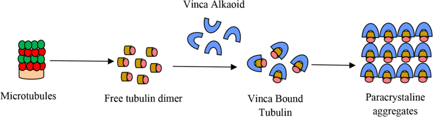

Catharanthus roseus Pink

The mechanism of action of vinca alkaloids is to arrest dividing cells in metaphase by
binding tubulin and preventing its polymerization into microtubules. This is also the proposed mechanism of
causing neuropathy by inhibiting anterograde and retrograde axonal transport, thereby causing axonal
degeneration.

acute lymphocytic leukaemia,
non-small cell lung cancer,
bladder cancer